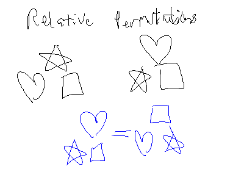

Permutation: Ordered arrangement of objects.
The number of permutations of r distinct objects chosen from n distinct objects is denoted by P(n,r)
Mathematically, for r \le n, an r-permutation from n objects is defined by:
\begin{aligned} P(n,r) &= n \times (n-1) \times (n-2) \times ... \times (n-r+1) \\ &= \frac{ n \times (n-1) \times (n-2) \times ... \times (n-r+1) \times (n-r)! }{ (n-r)! } \end{aligned}
So: P(n,r) = \frac{ n! }{ (n-r)! }
Empty Set: P(n,0)=\frac{n!}{n!}=1
Picking Only One Object: P(n,1)=\frac{n!}{(n-1)!}=n
Arranging n objects: P(n,n)=\frac{n!}{0!}=n!
Problem: Ten athletes compete in an Olympic event. Gold, silver and bronze medals are awarded to the first three in the event, respectively. How many ways can the awards be presented?
\text{3 Objects from a Pool of 10: } P(10,3) = \frac{10!}{7!} = 720
Problem: How many ways can six people be seated on six chairs?
P(6,6) = 6! = 720
Problem: How many ways can six people be seated in a circle?
\text{In a circle: }=(n-1)!=5!

Problem: How many permutations of the letters ABCDEF contain the letters DEF together in any order?
Problem: The professor’s dilemma: how to arrange four books on OS, seven on programming, and three on data structures on a shelf such that books on the same subject must be together?
\begin{aligned} \text{All Possible Permutations} &= \text{OS} \times \text{Programming} \times \text{Data Structures} \\ &= [ P(4,4) \times P(7,7) \times P(3,3) \times P(3,3) ] \times P(3,3) \\ &= (4!7!3!)3! \\ &= 4354560 \end{aligned}
If we don’t care about order in permutations, we’re talking about combinations, which are denoted by:
C(n,r) = \frac{n!}{(n-r)!r!}
Note: C(n,r) is much smaller than P(n,r) by definition.
Empty Set: C(n,0) = 1
Choosing One Object: C(n,1) = n
Choosing n Objects From n Objects: C(n,n) = 1
Problem: How many ways can we select a committee of 3 from 10.
C(10,3) = \frac{10!}{7!3!}
Problem: How many ways can a committee of two women and three men be selected from a group of five different women and six different men?
\text{Two Women from 5 Possible: } C(5,2) = \frac{5!}{3!2!} \\ \text{Three Men from 6 Possible: } C(6,3) = \frac{6!}{3!3!} \\~\\ C(5,2) \times C(6,3) = \frac{5!}{3!2!} \times \frac{6!}{3!3!}
Problem: How many poker hands five-card poker hands contain cards all of the same suit?
C(\text{13 \text{cards in every suit},5 \text{cards in a hand}}) \times 4 \text{ suits} \\ 4C(13,5)=5148
Problem: How many five-card poker hands can be dealt from a standard 52-card deck?
C(52,5)=2,598,960
Problem: How many distinct permutations can be made from the characters in the word YORK?
Problem: How many distinct permutations can be made from the characters in the word WASHINGTON?
Problem: How many distinct permutations can be made from the characters in the word ILLINOIS?
Problem: How many distinct permutations can be made from the characters in the word MISSISSIPPI?
Problem: How many permutations of the characters in the word COMPUTER are there? How many of these end in a vowel?
$$
3 ! $$
Problem: How many distinct permutations of the characters in ERROR are there?
\frac{5!}{3!}
Problem: A set of four coins is selected from a box contains five dimes and seven quarters. Find the number of sets which has two dimes and two quarters.
C(5,2) \times C(7,2) = \frac{5!}{3!2!} \times \frac{7!}{5!2!} = 10 \times 21 = 210
Problem: How to select a committee of 3, from 4 men and 3 women, where there must be at least 1 man and 1 woman in the committee.
\frac{ C(4,1) \times C(3,1) \times C(3 \text{ (remaining men)} + 2 \text{ (remaining women)},1) }{ 2 \text{ (for double-counting, because different order doesn't make selections unique)} }
Problem: How many ways can you seat 11 men and 8 women in a row?
P(19,19) = 19!
Problem: How many ways can you seat 11 men and 8 women in a row if all the men sit together and the women sit together?
11! \times 8! \times 2!
Problem: How many ways can you seat 11 men and 8 women in a row where no 2 women are to sit together?
11! \text{ (ways to arrange the men)} \times P(12,8) \text{ (places for the eight women to sit)}
Problem: How many ways can you seat 11 men and 8 women in a circle where no 2 women are to sit together?
10! \text{ (ways to arrange the men in the circle)} \times P(11,8)